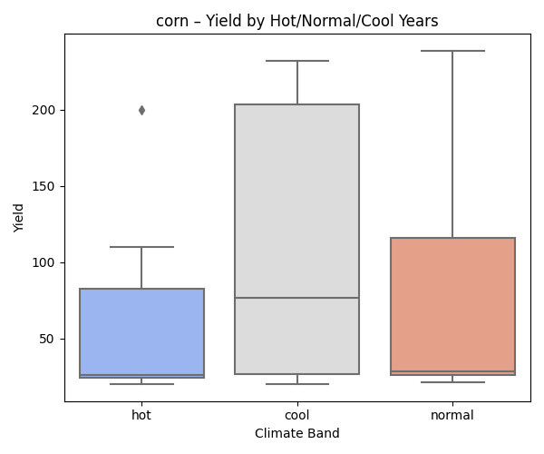
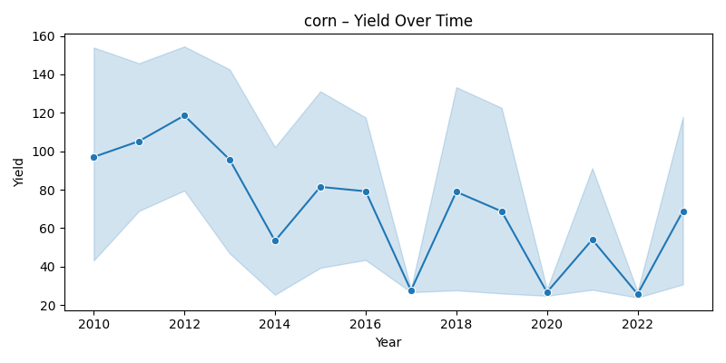
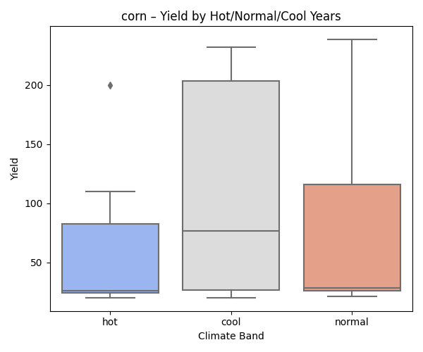
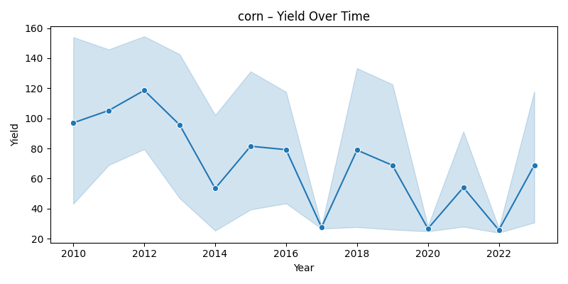

Data Sources
- USDA NASS QuickStats (yield, acreage, production)
- NOAA CDO (daily temperature, precipitation)
- Census TIGER/Line county boundaries
Methods
- Downloaded county-level ag and weather data (2010–2024)
- Engineered features: mean temp, total precip, area harvested
- Trained Random Forest models per crop
- Analyzed yield drop during hot years (temp > +1 std. dev)
Model Results Summary
| Crop | R² | MAE | Notes |
|---|---|---|---|
| Corn | 0.675 | 28.43 | Good correlation with precipitation |
| Beans | 0.614 | 292.16 | Strong yield recovery in heat |
| Wheat | 0.269 | 14.69 | Moderate climate sensitivity |
| Cotton | 0.165 | 167.81 | Low signal-to-noise ratio |
| Tomatoes | -0.063 | 4.74 | Yield fairly stable |
| Rice | -1.05 | 540.84 | Unpredictable climate relationship |
| Barley | -0.29 | 8.50 | Severe heat sensitivity |
Yield Impact from Hot Years
| Crop | Normal | Hot | Change | % Change | Hot Years |
|---|---|---|---|---|---|
| Corn | 76.85 | 56.62 | -20.23 | -26.32% | 15 |
| Barley | 72.2 | 36.0 | -36.2 | -50.14% | 2 |
| Beans | 2411.72 | 2730.0 | +318.28 | +13.2% | 3 |
| Wheat | 78.41 | 87.85 | +9.44 | +12.04% | 11 |
| Tomatoes | 48.37 | 51.16 | +2.79 | +5.77% | 17 |
| Cotton | 1584.8 | 1535.64 | -49.16 | -3.1% | 7 |
| Rice | 8529.35 | 8582.86 | +53.51 | +0.63% | 7 |